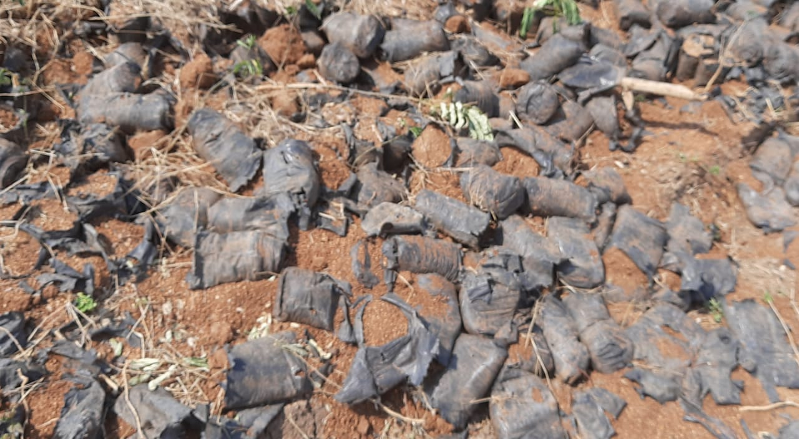
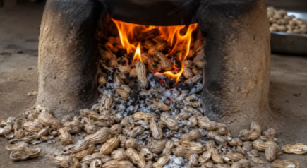
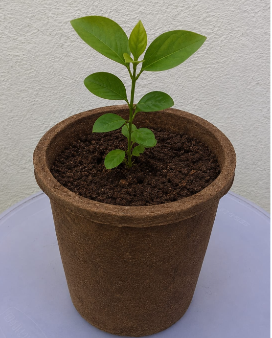
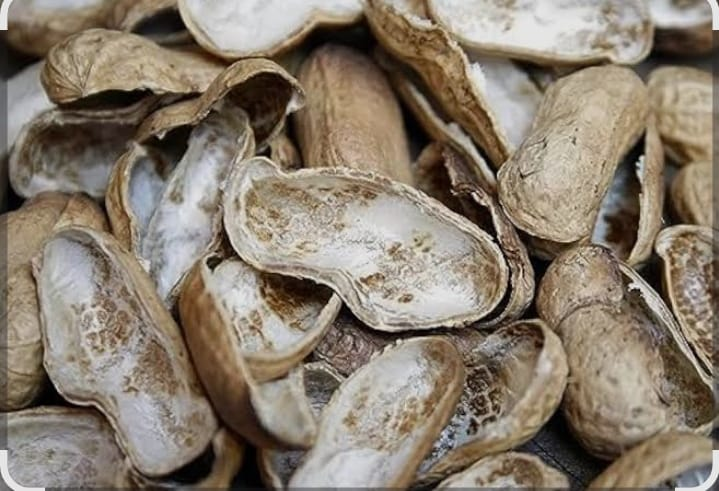
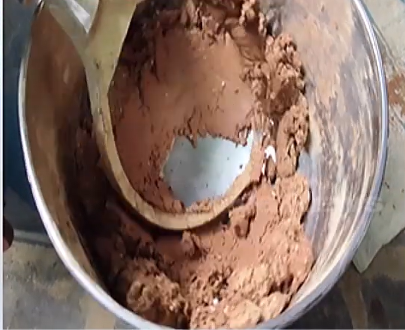
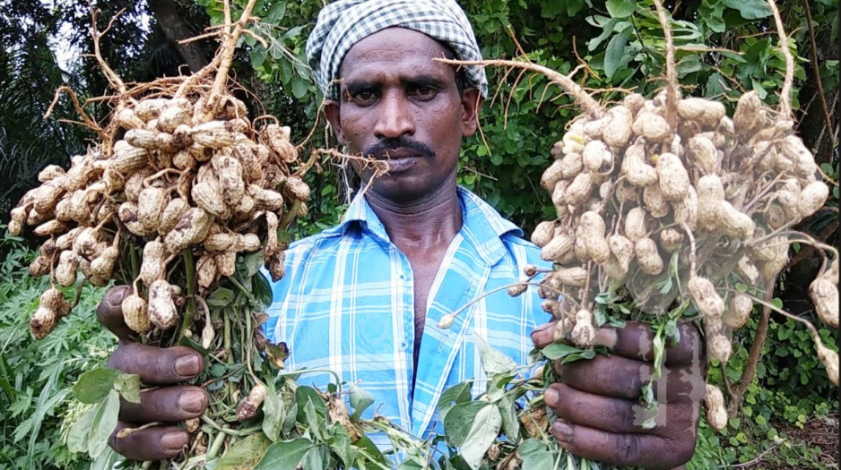
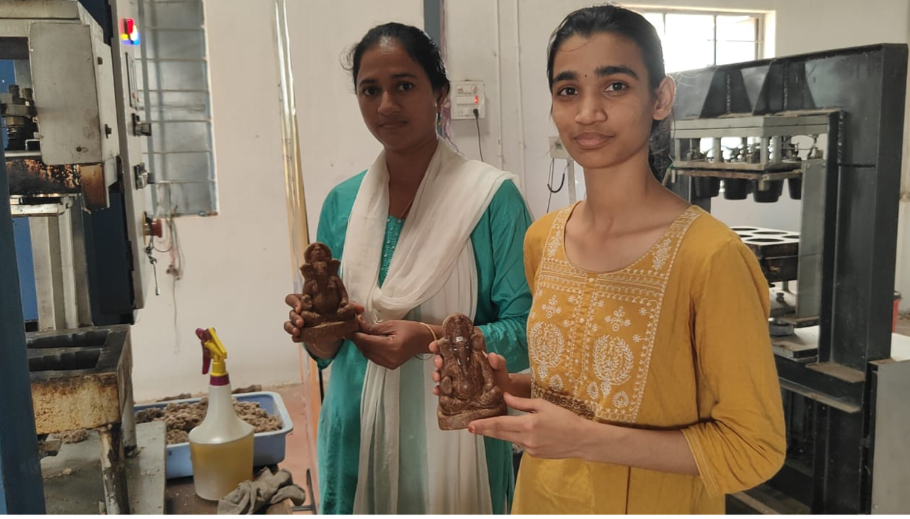

WELCOME TO
SRIJA GREEN GALAXY Pvt Ltd
Turning Agricultural Waste into a Greener Tomorrow
We transform agricultural waste into innovative, eco-friendly products that protect nature and create sustainable opportunities for communities.
OUR SUSTAINABLE DEVELOPMENT GOALS
Our Work. Our Impact.
Our work contributes to global sustainability through responsible production, climate action and protection of life on land.
Responsible Consumption & Production
We transform agricultural waste such as groundnut shells into useful, biodegradable products.
Climate Action
By giving agricultural waste a productive use, we work toward reducing open burning and associated emissions.
Life on Land
Our biodegradable products support sustainable planting and encourage alternatives to persistent plastic nursery bags.
THE CHALLENGE & THE CHANGE
From Waste to Value
We looked at two environmental challenges and explored how agricultural waste could become part of a sustainable solution.

PLASTIC WASTE
AGRICULTURAL WASTEWaste With a Cost.
Agricultural residues such as groundnut shells may be discarded or burned instead of being put to productive use.
Waste With a Purpose.
We transform groundnut shells into sustainable, value-added products such as Biopots.

WHAT WE CREATE
From Waste
to Worth.
Transforming groundnut shells into sustainable products for greener living and responsible celebrations.
Biopots




Groundnut shells, given a second life.
Eco Vinayaka


Celebrate with nature, not plastic waste.
WHY CHOOSE OUR PRODUCTS?
Why Srija Green Galaxy Products?
Sustainable solutions designed to support plants, reduce plastic waste and protect our environment.
Non-Toxic
Made from natural, biodegradable materials that are designed to avoid conventional plastic waste in the soil.
Biodegradable & Compostable
Our biopots are designed to naturally break down after use, reducing dependence on conventional plastic nursery bags.
Soil-Friendly
The natural material can break down into organic matter and support a more sustainable planting system.
Transplant-Safe
Saplings can be planted directly with the biopot, helping reduce disturbance to the roots during transplantation.
Cost-Effective
A practical sustainable option for farmers, nurseries and gardeners looking to reduce conventional plastic use.
Value from Agricultural Waste
Groundnut shells that were previously treated as waste are converted into useful value-added sustainable products.
Fish-Friendly Immersion
Our groundnut-shell Ganesh idols are made using biodegradable materials. After immersion, the material is designed to naturally break down without leaving conventional plastic waste.
Water-Friendly Alternative
Our biodegradable Ganesh idols provide an alternative to conventional materials and are designed to reduce persistent waste entering water bodies after immersion.
OUR PROCESS
From Groundnut Shells to Plant Growth
Follow the journey from agricultural waste to a sustainable planting solution.

Groundnut Shells
Agricultural groundnut shells are collected and given a new purpose.

Processing
The shells are processed and prepared for sustainable product manufacturing.
Biopots
Processed groundnut shells are transformed into useful biodegradable Biopots.
Plant Growth
Plants grow in sustainable Biopots, supporting a greener planting cycle.
OUR MACHINERY
From Agricultural Waste to Sustainable Products
Explore the machinery and production stages behind our groundnut-shell based sustainable products.
OUR IMPACT
Creating Impact from Agricultural Waste
From discarded groundnut shells to sustainable products, our innovation creates environmental and social impact.
Value to Agricultural Waste
We transform discarded groundnut shells into useful sustainable products.
Reduced Waste Burning
Giving agricultural waste a productive purpose can help reduce unnecessary burning.
Encouraging Sustainable Planting
Biopots provide an eco-friendly alternative to conventional plastic nursery bags.
Reducing Single-Use Plastic
Our Biopots are designed to replace single-use plastic nursery bags.

Additional Farmer Revenue
Groundnut shells that were once treated as waste can become a source of additional value.
Rural Employment
Our initiative supports opportunities for local workers through sustainable production.

RECOGNITION
Our Journey of Innovation
🏆 CSIR Innovation Award
Recognized nationally for the innovative Biopot concept.
🌱 TGIC Intinta Innovator
Recognized for grassroots innovation and sustainable thinking.
🌍 TiE50 Hyderabad
Selected among the Top 50 innovative ventures in the TiE50 Hyderabad program.
🚀 Global Innovation
Represented the innovation journey at global platforms and summits.
Let's Grow a Greener Future Together
Join us in transforming agricultural waste into sustainable possibilities.
Contact Us